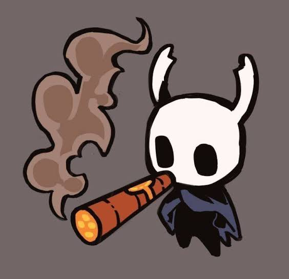
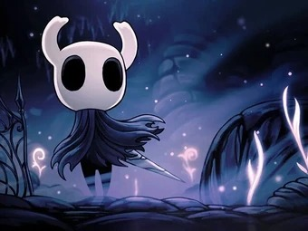
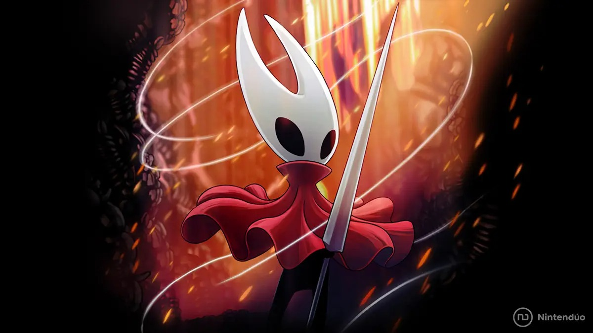
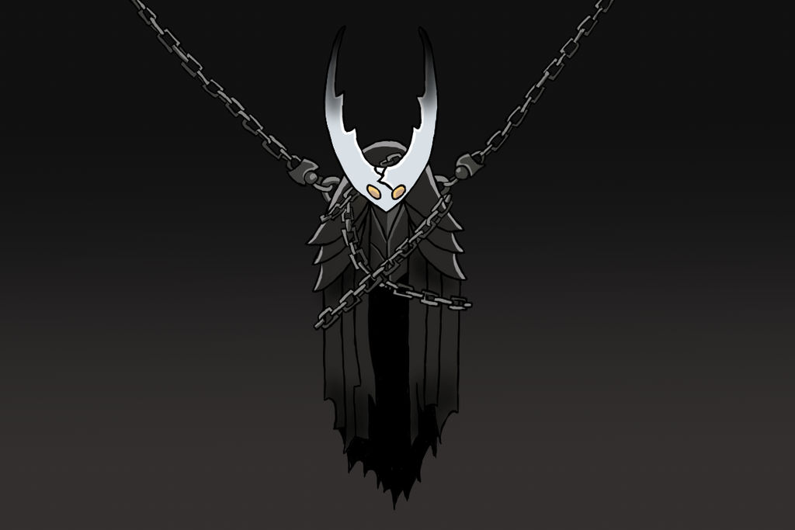
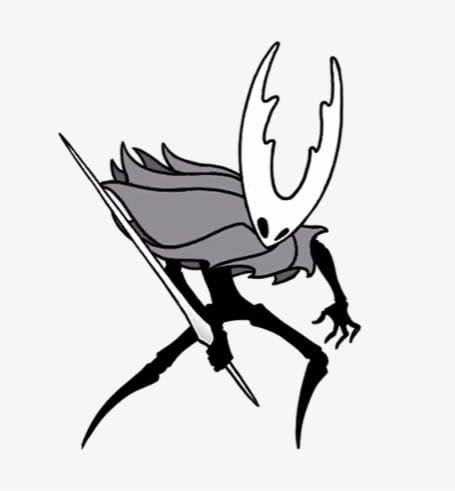
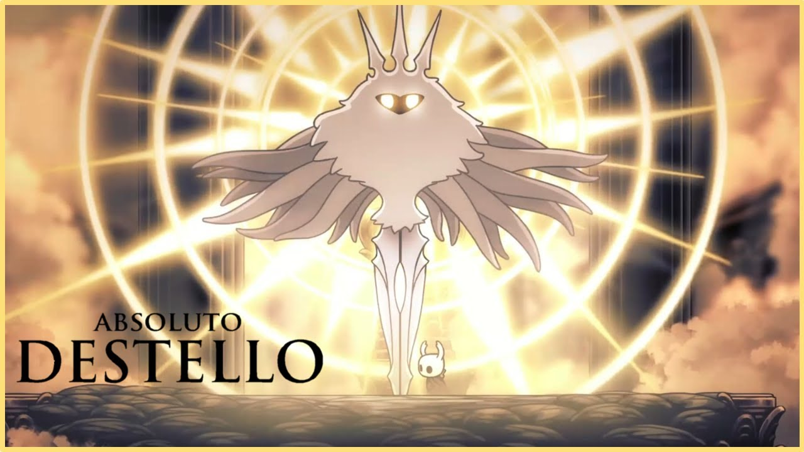
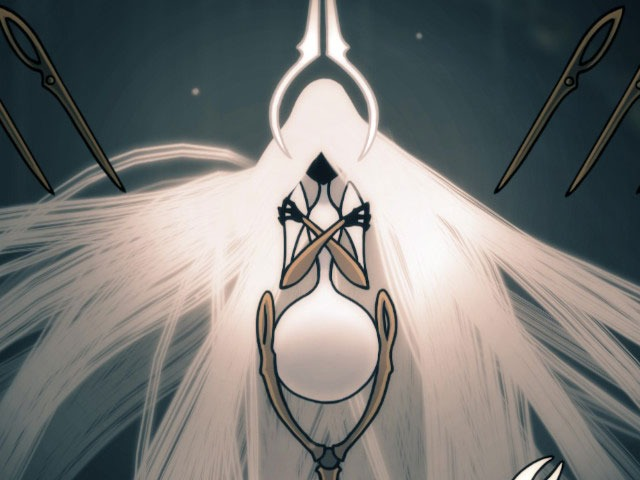

Tú controlas a un misterioso y silencioso guerrero conocido simplemente como el Caballero. Armado solo con un aguijón (su espada), debes descender a las profundidades de este mundo olvidado para descubrir sus secretos, enfrentar a sus antiguos habitantes corrompidos y desentrañar una misteriosa infección que ha vuelto locas a las criaturas del reino. A lo largo del viaje, descubrirás el trágico pasado de Hallownest y el verdadero e impactante origen del propio Caballero.


Hornet, hija de tejedora y el Rey Palido. Un especimen unico en su especie con la capacidad de controlar la seda envuelta en el poder del alma, fue capturada y escoltada al reino de Pharloom (Telalejana), un reino consumido por la seda y la cancion que hace que la mayoria de sus habitantes sirvan a un ser superior. Hornet se embarca en la mision de liberar esta pobre civilización, en el camino, desentraña los secretos de la misma, y descubre muchos secretos sobre los suyos y su naturaleza.
El Hollow Knight, hijo del Rey Palido y la Dama Blanca, una vasija "perfecta", cuya perfeccion se basaba en no sentir. Creada con un proposito, contener la infeccion que esparsia un Dios conocido como "El Destello" por todo el reino de Hollownest. La vasija fue entrenada, acojida e instruida por su propio padre, sin embargo, cometio un error... Poder sentir, esta vasija veia al Rey Palido como su padre, creando un sentimiento de paternidad al instante por como convivian. El Rey Palido al darse cuenta sobre los sentimientos de su creacion, decidio encerrarla y encadenarla para que no pudiera escapar con el proposito de que siga conteniendo la infección... Y tambien, con el proposito de no pelear con su propio hijo...


Vasija Pura es la version onirica del Hollow Knight, una vasija tal y como la habia planeado el Rey Palido, sin sentimientos, fuerte, experto en el control del alma, el mejor con la espada, la clara representacion del guerrero mas fuerte. No hay mucho que explicar sobre esta version del Hollow Knight, es perfecto, pero ser perfecto en este mundo tambien implica estar vacio...
El antagonista principal del primer Hollow Knight es un Dios con la capacidad de controlar y hacer mutar a casi cualquier criatura a trvez de algo llamado "infeccion". Cualquier individuo con la cpacidad de sentir sera afectado por la misma sin importar lo que hagas. No importa que tan rsistente seas, no importa que tan fuerte seas, ni cuan perfecto lo sea... Al final terminaras sediendo...


Es un Ser Superior, la fuente primordial de la seda y la gobernante en la sombra detrás de los hilos que unen y dominan el reino de Pharloom. Interesada por la seda especial que habita en el interior del la coraza de Hornet hare todo lo posible para poder fusionarse con ella o robarle ese poder tan unico que posee la ya mencionada. No importa si tiene que enviar a su propia hija para cumplir su cometido.